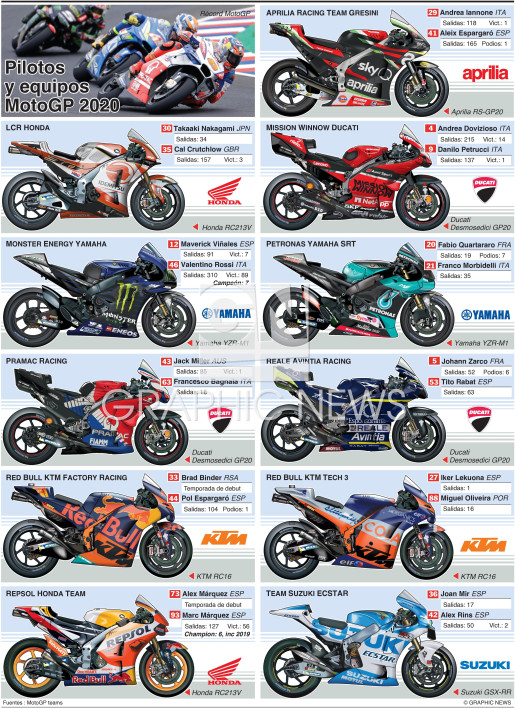
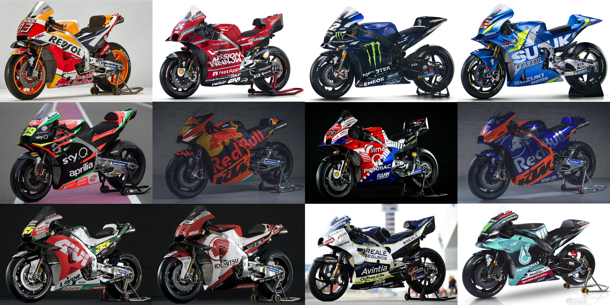
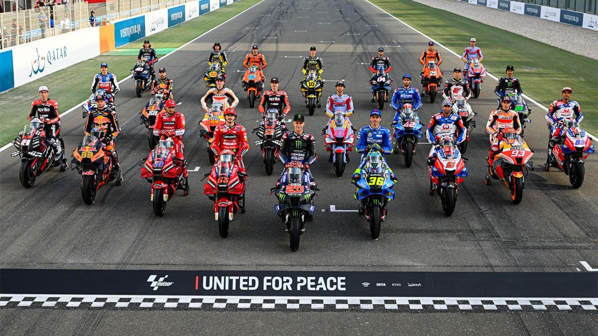
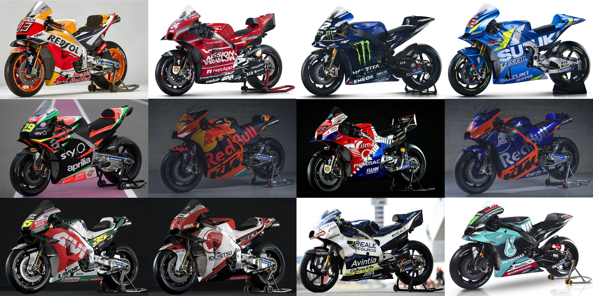
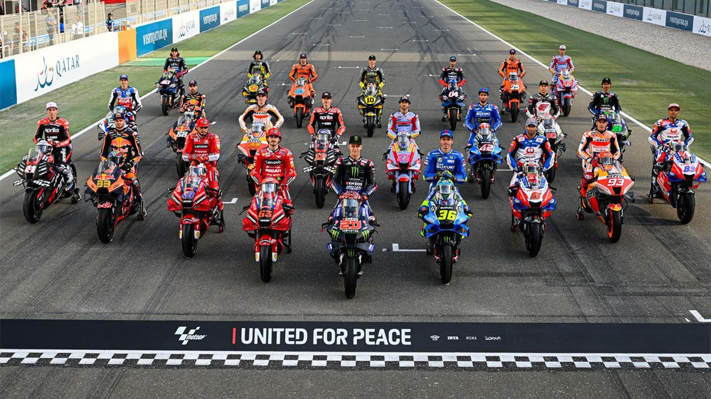
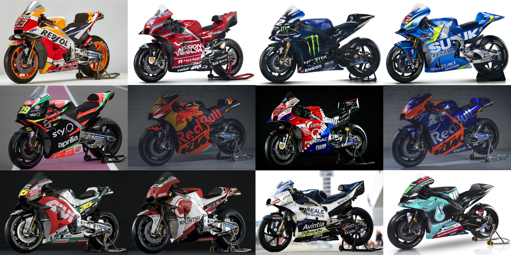
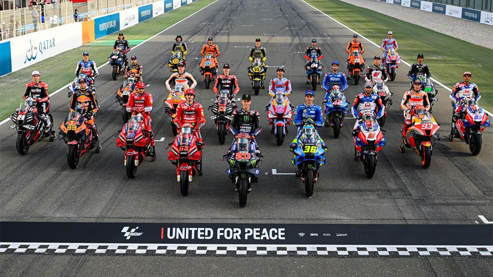

MOTOS
En MotoGP usan motos de carreras exclusivas fabricadas por cinco constructores: Ducati, KTM, Aprilia, Yamaha y Honda. Estas motos son prototipos de alto rendimiento, no modelos de calle modificados, y se caracterizan por sus potentes motores (más de 250 caballos), chasis ligeros y aerodinámica avanzada.

 




